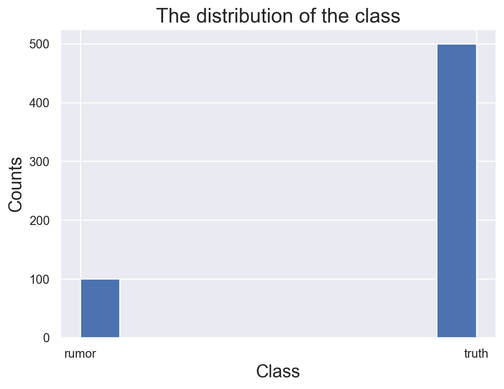

In this tab, we tried to build Rumor Detection A classification method called SVM(Supported Vector Machine) will be used. The data set included is “cleaned_supervised_data.csv”
Theroy
SVM “draw a bound” at the middle of the distance between the closest two samples.
(Example how svm functions)
Beside, by appling “kernel trick”, SVM can also draw non-linear lines to seperate points.
(Example how kernel svm functions)
Advantages of this method is: SVM performs reasonably well when the difference between classes is huge.
Method
This part will show the workflow of training the optimal models with SVM.
Class Distribution
Code
# import librariesimport numpy as npimport pandas as pdimport matplotlib.pyplot as pltimport seaborn as snsfrom sklearn.svm import SVCfrom sklearn.model_selection import GridSearchCVfrom sklearn.model_selection import train_test_splitfrom sklearn.feature_extraction.text import CountVectorizerfrom sklearn.metrics import accuracy_scorefrom sklearn.metrics import precision_recall_fscore_supportfrom sklearn.metrics import precision_scorefrom sklearn.metrics import recall_scorefrom sklearn.metrics import confusion_matrix#set the seed np.random.seed(1)#load the data df=pd.read_csv("../../data/01-modified-data/supervised_data.csv")y=df["label"]#plot the distribution of two classessns.set_theme()plt.hist(y)plt.title("The distribution of the class",fontsize=18)plt.xlabel("Class",fontsize=16)plt.ylabel("Counts",fontsize=16)df.head()
text
location
friends_count
followers_count
screen_name
retweet_count
favorite_count
label
description
0
is that you tome hanks?...how about we keep am...
NaN
12269
39845
helen henning
763
4208
rumor
MAKE AMERICA FLORIDA...let's have some fun...s...
1
After the dreadful hurricane in Florida @VP K...
London
34500
36867
David Atherton
198
297
rumor
Libertarian, free markets, free speech. "Selfi...
2
Heartbreaking! Iranian father who promised to ...
Iraq
1619
9009
Shukri Hamk
9589
30927
rumor
-Survivor of #YazidiGenocide. -human rights ac...
3
my dad just sent me this video from Naples Flo...
NaN
72
32
the worlds foremost authority
933
3681
rumor
it’s just a cope fest
4
Omg so all funerals due on the 19 th have been...
NaN
4995
4080
Carolyn Brown
3381
26141
rumor
Feminist, Cymraes and European! üè¥Û†ÅßۆŢۆÅ∑ۆŨۆÅ≥Û†Åøüá™üá∫üè¥Û†ÅßۆŢۆÅ≥ۆţ...

This is an imbalanced data, the number of truth is bigger than the number of rumor. This is induced by two different ways of collecting data. Rumor samples are rather hard to get. In this model, we will try to use sample a equal number of truth from the rows where label is “truth”.
Baseline Model for Comparsion
Code
# transform the label y=y.str.replace("rumor","1")y=y.str.replace("truth","0")y=y.astype("int")#set a baseline model which random predict labeldef random_classifier(y_data): ypred=[] max_label=np.max(y_data);#print(max_label)for i inrange(0,len(y_data)): ypred.append(int(np.floor((max_label+1)*np.random.uniform(0,1))))print("-----RANDOM CLASSIFIER-----")print("accuracy",accuracy_score(y_data, ypred))print("percision, recall, fscore,",precision_recall_fscore_support(y_data,ypred))random_classifier(y)
What a baseline model here did is guess the class. And we can see that every metric is around 50%. So if a model perform than this baseline, than we can say it do make some sense.
Feature Selection
Code
#sample a subset of negative samplesa=df[df["label"]=="truth"].sample(100)b=df[df['label']=="rumor"]df=pd.concat([a,b])df.reset_index(drop=True, inplace=True)y=df['label']X=df["text"]y=y.str.replace("rumor","1")y=y.str.replace("truth","0")y=y.astype("int")#transform texts with countvectorizervectorizer = CountVectorizer()matrix = vectorizer.fit_transform(X)X = pd.DataFrame(matrix.toarray(),columns=vectorizer.get_feature_names_out())#split the datax_train,x_test,y_train,y_test=train_test_split(X,y,test_size=0.2)
This model try to use texts to classify, so our features are texts transformed by “CountVectorizer”
Model tuning
Code
#find the best hyperparametres with GridSearchCV libraryparameter=[ {"C":[1,10,100,1000],"kernel":["linear"]}, {"C":[1,10,100,1000],"kernel":["rbf"],"gamma":[0.1,.2,.3,.4,.5,.6,.7,.8,.9]}]grid_search = GridSearchCV(SVC(), param_grid=parameter, scoring="accuracy",cv=10)grid_search=grid_search.fit(X, y)print("The best hyperparametres are:",grid_search.best_params_)grid_search
The best hyperparametres are: {'C': 1, 'kernel': 'linear'}
In a Jupyter environment, please rerun this cell to show the HTML representation or trust the notebook. On GitHub, the HTML representation is unable to render, please try loading this page with nbviewer.org.
In this part, we use “GridSearchCV” function to help us find the beset parametres so that we don’t need to write codes and make some loops manually. The result shows that we should use linear kernel and should set C as 1.
Final Results
Code
#write a function to report and plot the metrics and confusion matrix.def confusion_plot(y_data,y_pred):print("ACCURACY: "+str(accuracy_score(y_data,y_pred))+"\n"+"NEGATIVE RECALL (Y=0): "+str(recall_score(y_data,y_pred,pos_label=0))+"\n"+"NEGATIVE PRECISION (Y=0): "+str(precision_score(y_data,y_pred,pos_label=0))+"\n"+"POSITIVE RECALL (Y=1): "+str(recall_score(y_data,y_pred,pos_label=1))+"\n"+"POSITIVE PRECISION (Y=1): "+str(precision_score(y_data,y_pred,pos_label=1))+"\n" ) cf=confusion_matrix(y_data, y_pred)# customize the anno group_names = ["True Neg","False Pos","False Neg","True Pos"] group_counts = ["{0:0.0f}".format(value) for value in cf.flatten()] group_percentages = ["{0:.2%}".format(value) for value in cf.flatten()/np.sum(cf)] labels = [f"{v1}\n{v2}\n{v3}"for v1, v2, v3 inzip(group_names,group_counts,group_percentages)] labels = np.asarray(labels).reshape(2,2)#plot the heatmap fig=sns.heatmap(cf, annot=labels, fmt="", cmap='Blues') plt.title("Confusion Matrix of Texts - Decision Tree",fontsize=18) fig.set_xticklabels(["Truth","Rumor"],fontsize=13) fig.set_yticklabels(["Truth","Rumor"],fontsize=13) fig.set_xlabel("Predicted Labels",fontsize=14) fig.set_ylabel("True Labels",fontsize=14) plt.show()#fit the model with the best hyperparametresclf=SVC(C=1,kernel="linear")clf.fit(x_train,y_train)yp_test=clf.predict(x_test)confusion_plot(y_test,yp_test)
It seems that even we have used the best hyperparametre, however, the effect of svm is still bad. We can not confidently make judgement basde on this model, since it can hardly distinguish positive samples.
Conclusion
It turns out SVM is not suitable for our topic,performs much worse than naive bayes when facing the same task. The reason may be that we haven’t collected enought data.
Comparing to the naive bayes model, it seems naive bayes still outperform SVM on this task even though its a simple model.